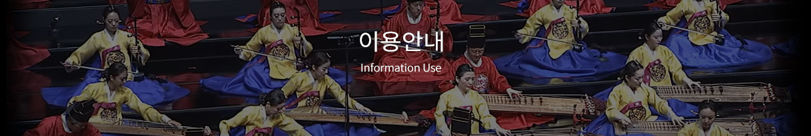
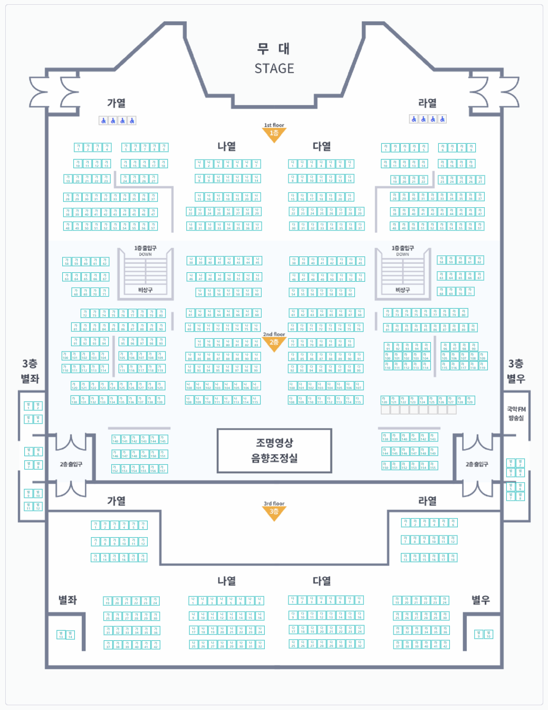

공연/대관
교육/대회
연구/자료
참여
소개
이용안내
정보공개
로그인
회원가입
사이트맵
ENGLISH
공연/대관
교육/대회
연구/자료
참여
소개
이용안내
정보공개
공연/행사정보
공연예매
공연장대관
교육안내
유아청소년
가족
교사
외국인
경연대회
e국악아카데미
교육연구
학술연구
악기연구
국악자료실
사진자료실
국악아카이브
생활국악자료실
참여
국민신문고
정책토록
관람후기
국악묻고답하기
자유게시판
소개
인사말
주요사업 및 비전
연혁
조직 및 업무
국악연주단소개
국악원소식
이용안내
관람안내
FAQ
시설안내
오시는길
분실물찾기
정보공개
정보공개제도안내
사전정보공표
정보공개자료방
공개목록
정보공개창구
공공데이터개방

이용안내
관람안내
좌석배치도
교육소개
대회소개
e-국악아카데미
국악동요음원
좌석배치도
이용안내
좌석배치도
예악당
우면당
풍류사랑방
연희마당

담당부서:
국립국악원
담당자:
홍길동
문의전화:
02-580-3300